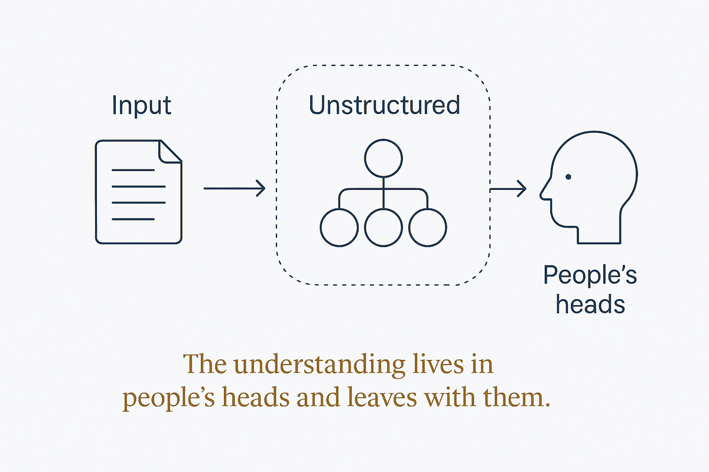

The understanding lives in people's heads and informal conversation — never in the model, the docs, or anywhere a newcomer or an AI can reach it.

The understanding exists, but only in people. Not in the model, not in the documentation, not in anything a newcomer can read — in heads, in corridor conversations, in "ask Marieke, she knows how that table works."
It is not ignorance. A team with deep tribal knowledge often understands its domain extremely well. The failure is that the understanding has no external form, so it cannot be checked, inherited, corrected, or reasoned over by anything other than the people carrying it.
Tribal knowledge used to be an efficiency problem: slow onboarding, repeated questions, occasional expensive mistakes. It survived because humans are good at absorbing context informally over time.
An agent cannot do that. It has no corridor, no coffee, no six months of osmosis. Anything not externalised is, to an AI, simply absent — and it will confidently fill the gap with something plausible. The cost of tribal knowledge used to be friction; now it is fabrication.
Not a wiki. Wikis are where tribal knowledge goes to die slowly — written once, never maintained, distrusted within a year. What replaces it is structure that is a by-product of the work: the model that had to be made explicit anyway, the decision record written when the decision was taken, the folder-note that says what lives here. Externalisation that happens during the work survives; externalisation as a separate documentation project does not.